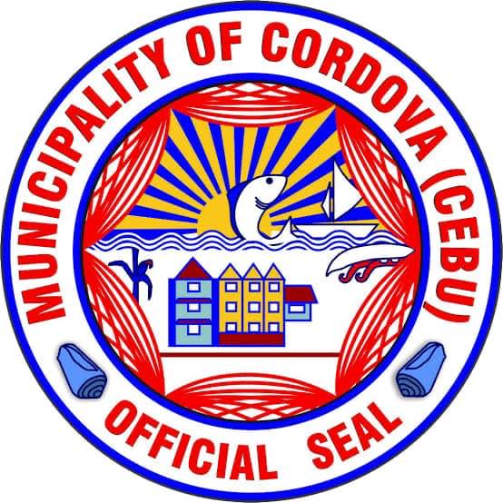

- Cordova is a municipality located in the province of Cebu, Philippines. It is situated on the southern tip of Mactan Island and includes several smaller islands nearby, such as the southern part of the Olango Island Group.
Cordova is connected to the main island of Mactan by two bridges and is linked directly to Cebu City via the Cebu-Cordova Link Expressway, which opened in 2022.
- The municipality is known for its resorts and water activities, making it a popular destination for tourists interested in beach and diving experiences.
It is also home to the Cordova Public Market, a vibrant shopping destination that offers fresh local produce and unique finds, attracting both locals and visitors.
The municipality is bordered by Lapu-Lapu City to the north, the Mactan Channel to the west, the Hilutangan Channel and Olango Island to the east, and the Cebu Strait to the south.
-
The climate in Cordova is classified as hot and humid, with temperatures ranging from 18 to 35 °C (65 to 95 °F).
Cordova is politically subdivided into 13 barangays and has a population of 70,595 as of the 2020 census.